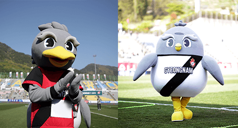

100
이름
1.
아래는 K리그 유튜브의 영상 중 일부다. 전북현대 한승규에게 다짜고짜 “사랑해”라고 고백했을 때, 한승규의 반응으로 알맞은 것을 고르시오.
해설 : ➀ “저도 사랑합니다♥”
2.
울산현대는 개성 넘치는 선수들의 끈끈한 조직력으로 유명한 팀이다. 선수들의 넘치는 개성만큼이나 각 선수들을 표현하는 다양한 별명이 있는데, 다음 중 선수의 이름과 별명이 잘못 짝지어진 것은?
해설 : ➄ 울산현대의 수문장 김승규선수의 별명은 마이콜이다.
3.
FC서울은 K리그를 대표하는 명문 클럽인 만큼 다양한 기록을 보유하고 있다. 특히, 2010년 5월 5일 어린이날 서울과 성남과의 K리그 경기를 통해, FC서울은 프로스포츠 단일 경기 최다 관중 신기록을 달성했다. 그렇다면 이 경기에 모인 총 관중의 수는 몇 명인가?
해설 : ➂ FC서울은 2010년 5월 5일 어린이날 총 60,747명이 경기장을 찾으며 프로 스포츠 단일 경기 최다 관중 신기록을 달성하였다.
4.
2019 K리그의 예능을 담당하는 강원FC는 최근 다채롭고 재미있는 영상 콘텐츠로 큰 인기를 끌고 있다. 아래는 강원FC의 “2019 강원FC 추석 전통놀이 이벤트” 영상이다. 영상에서 치마를 펄럭이지 않은 강원FC 선수는 보기중 누구인지 고르시오.
해설 : ➄ 영상에서 골키퍼 이광연 선수만 유일하게 펄럭이지 않았다.
5.
대구FC는 수많은 미남 축구선수를 보유하고 있는 팀으로 알려져있다. 그중에서도 대구 아이돌로 불리는 정승원 선수가 큰 인기를 끌고 있다. 보기 중 정승원의 신체부위가 아닌 사진을 고르시오.
6.
수원삼성의 외국인 스트라이커 타가트 선수는 7월 “EA 이달의 선수상”을 수상했습니다. 이 상을 수상한 선수는 유니폼에 “이달의 선수상” 수상을 의미하는 패치를 부착합니다. 타가트 선수의 패치 부착 위치는 어디일까요?
7.
상주상무는 국군체육부대 산하의 축구단으로 대한축구협회 소속 선수들이 대한민국 헌법에서 규정된 국가의 의무인 국방의 의무를 수행하기 위하여 입단하는 팀이자 K리그의 당당한 한 구성원입니다. 다음 중 상주상무의 공식 용품 판매 온라인 쇼핑몰의 이름은 무엇일까요?
해설 : ➄ 상주상무의 유니폼, 머플러 등을 구매할 수 있는 공식 온라인 쇼핑몰의 이름은 충성마트이다.
8.
아래는 포항스틸러스의 홈구장에 관한 설명이다. 내용 중 ( )에 들어갈 말로 올바른 것은?
해설 : ➄ 청암존은 국내 프로축구 경기장 최초의 구역 네이밍 실시된 곳이다.
9.
아래는 성남FC 유튜브의 “K리그 선배&후배 “솔직하게 말해보자!” [까치톡]”영상 이다. 보기중 성남 팀 동료들이 꼽은 박태준 선수의 흑역사는 무엇인가?
해설 : ➁ 성남FC 팀 동료들의 증언에 따르면 박태준 선수는 모쏠이라 연애를 못해본 것으로 보인다.
10.
아래는 경남FC 마스코트의 사진이다. 각 마스코트의 설명으로 옳지 않은 것은?
Q. 지훈 : 우리 경남FC의 마스코트를 소개할게.
해설 : ➃ 경남이의 키는 150cm 몸무게는 50kg다.
이름
11.
아래는 제주유나이티드 유튜브의 “캐스터 해설 당황시키는 제주 삼춘 팬 목청 ㅋㅋㅋㅋㅋㅋㅋㅋ”영상 이다. 영상에 등장하는 제주 “막아라 삼촌”의 대사로 옳지 않은 것은?
해설 : ➄ 영상에서 삼촌은 “경남 선수 여러분! 제주까지 오셔서 멋진 승부 펼쳐주셔서 고맙습니다!” 라는 말을 한 적이 없다.
12.
아래는 인천유나이티드 소속 한 선수의 어릴 적 사진이다. 보기 중 사진의 주인공을 고르시오.
해설 : ➃ 사진은 김진야 선수의 어릴 적 귀여운 사진이다.
13.
한국프로축구연맹 K리그는 현재 승강제도를 운영하고 있다. 1부 리그인 K리그1에서 12위를 기록한 팀은 2부 리그인 K리그2로 강등, K리그2에서 우승을 차지한 팀은 K리그1으로 승격합니다. 그렇다면 다음 보기 중, 승강제를 통해 1부와 2부 리그 승강을 경험해 본 적이 없는 팀은 어디일까요?
해설 : ➄ 인천유나이티드. 인천은 승강제 도입 이후 줄곧 K리그1에만 있었다.
14.
다음은 EA 이달의 선수상에 관해 친구들이 나눈 대화이다. 친구들 중 옳지 않은 설명을 하는 사람을 고르시오.
은비 : 대구 세징야는 K리그 최초의 이달의 선수상 수상자야.
세은 : 상주 김진혁은 입대 전, 이달의 선수상을 받아서 상주에선 패치를 달지 않아.
상수 : 전북 김신욱의 이달의 선수상 수상소감은 K리그 유튜브에서 볼 수 있어.
충희 : 강원 조재완은 춘천송암스포츠타운에서 이달의 선수상 시상식을 가졌어.
은호 : 수원 타가트는 7월 리그 전경기 득점으로 이달의 선수상을 수상했어.
해설 : ➁ 세은. 김진혁은 상주에서도 패치를 부착한다.
15.
한국프로축구연맹은 유소년 선수들이 체계적으로 축구를 할 수 있는 환경 마련에 앞장서고 있다. 2008년 “K리그 주니어” 대회를 시작으로 유스시스템 강화를 위해 지속적인 관심과 투자를 기울이고 있으며, 각 연령대별 대회의 숫자도 꾸준히 늘려가고 있다. 그렇다면, 2019년 기준, 한국프로축구연맹에서 운영 중인 유소년 대회(대한축구협회 비공식 대회 포함)의 개수는 총 몇 개일까?
해설 : ➁ 10개. 프로축구연맹은 5개의 공식 유소년 대회와 5개의 비공식 유소년 대회를 운영하고 있다.
16.
K리그는 유튜브, 페이스북, 인스타그램 등 다양한 SNS채널을 통해 콘텐츠를 제공하고 팬과 소통하고 있다. 각 플랫폼의 정확한 계정, 혹은 주소를 알맞게 짝지은 것은?
해설 : ➀ K리그의 공식 SNS를 모두 팔로우 중이라면 답을 알 수 있다.
17.
K리그1 시즌의 대미를 장식하는 스플릿 라운드. 2019년 스플릿 라운드는 “파이널 라운드”로 이름을 바꾸며 새로운 로고를 발표했다. 다음 중 “파이널 라운드”의 로고로 옳은 것을 고르시오.
해설 : ➄ “파이널 라운드”의 새로운 로고는 ➄이다.
18.
다음은 파이널 라운드에 관한 K리그 대회요강 중 일부를 발췌한 것이다. 괄호에 들어갈 말로 옳은 것을 고르시오.
해설 : ➁ 두 번째 우선순위 기준은 “정규 라운드 성적 상위 클럽”이다.
19.
상위 6개 팀 그룹의 이름과 하위 6개 팀 그룹의 이름이 각각 알맞게 짝지어진 것은?
해설 : ➃ 이 시험을 열심히 풀었다면 이번 문제의 정답은 “FINAL A – FINAL B”인 것을 쉽게 알 수 있다.
20.
한국프로축구연맹은 매 라운드 주간베스트팀을 선정해 발표하고 있다. K리그 인스타그램과 페이스북 공식계정의 프로필 이미지 역시 주간베스트팀에 선정된 클럽의 고유색을 따라 매 라운드 변경하고 있다. 그렇다면 보기중 주간베스트팀을 선정하는 기준에 포함되지 않는 것은 무엇인가?
해설 : ➄ 패스 정확도도 물론 중요하지만 주간베스트팀 선정에 있어서는 고려되지 않는다.